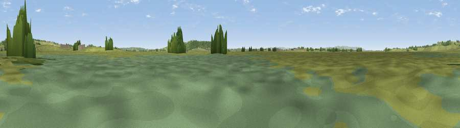

Viewpoint near Moorlinch
#32053 in England · top 82% of its area beats it · near MoorlinchThe view, rendered

A 360° render of this exact spot computed from the terrain model, tree cover and land cover — summer colours, afternoon light, calibrated against photographs of famous viewpoints. Real trees, hedges and buildings will differ in detail.
The panorama
Grey silhouette: terrain skyline in each direction (720 bearings, Earth curvature and refraction included). Dashed green: skyline with trees (+15 m) and buildings (+8 m) as obstacles. Blue strip: how far the ground is visible on each bearing.
Where the view opens
Wedge length = distance to the farthest visible ground on that bearing (vegetation-aware). Rings at 10, 25 and 50 km.
What fills the view
67% grassland · 14% woodland · 14% wetland · 4% cropland ·
Angular shares of the visible panorama (visual magnitude), not map area. Landscape diversity 0.43 (0–1 Shannon).
Key numbers
More beautiful places nearby
The staircase of upgrades: each row has a higher view potential than everything closer. Driving times are estimates from straight-line distance, calibrated against real road routing — check an actual route before setting out.
| Place | Direction | Drive | Score |
|---|---|---|---|
| Viewpoint near Moorlinch | N · 2 km | ~6 min | 63.8 |
| Socombe Hill | NNW · 4 km | ~8 min | 76.4 |
| Brent Knoll | NNW · 17 km | ~30 min | 77.7 |
| Viewpoint near Broomfield | W · 21 km | ~35 min | 78.5 |
| Cothelstone Hill | W · 21 km | ~35 min | 82.1 |
| Viewpoint near West Bagborough | W · 22 km | ~36 min | 84.3 |
| Wills Neck | W · 23 km | ~38 min | 85.7 |
| Viewpoint near Holford | WNW · 26 km | ~42 min | 85.9 |
51.10874, -2.86291 · source: osm viewpoint · position refined by local search. Computed location — check access rights before visiting.